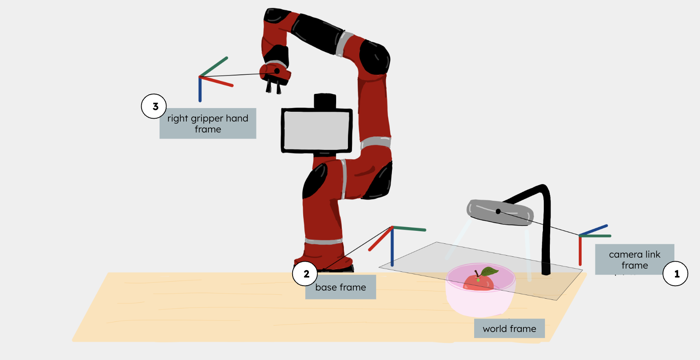
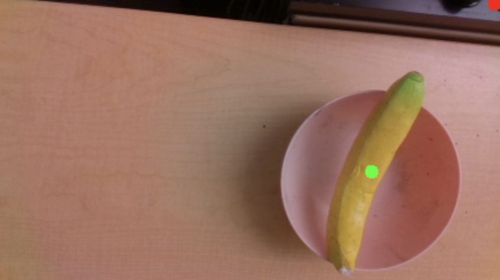

Project Documentation

Sorting bins used for waste disposal

Sawyer robot performing bowl manipulation

Diagram showing relative transforms between base, camera, and gripper frames

Objects used for training the computer vision system

Successful centroid detection on a banana, demonstrating our object detection system
Source Code & Files
All project code and resources are available in our GitHub repository:
- GitHub Repository: 106a-final
- Robot control code and motion planning implementation
- Computer vision system for object detection
- ROS launch files for system initialization
Hardware Documentation
CAD models and component specifications:
- Intel RealSense camera setup and calibration details
- Sorting bin dimensions and placement specifications